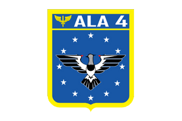

Oi! Eu sou o Márleo Piber da Rosa, sou formado em Análise e Desenvolvimento de Sistemas, trabalho com manutenção de hardware e softwares há mais de 10 anos, também sou videomaker e fotógrafo aéreo, trabalho com drones! Atualmente estou cursando o bootcamp Full Stack da Labenu para me capacitar ao mercado de trabalho para atuar como desenvolvedor.
Formações acadêmicas:
| Formação | Instituição |
|---|---|
| Web Full Stack Integral (Cursando) | |
| Tecnologia em Análise e Desenvolvimento de Sistemas | |
| Técnico em Radiologia |
Experiências:
| Cargo | Empresa |
|---|---|
| Videomaker (Autônomo) | |
| Suporte técnico Hardware e Software (Autônomo) | |
| Militar - Base Aérea de Santa Maria (ALA 4) |  |